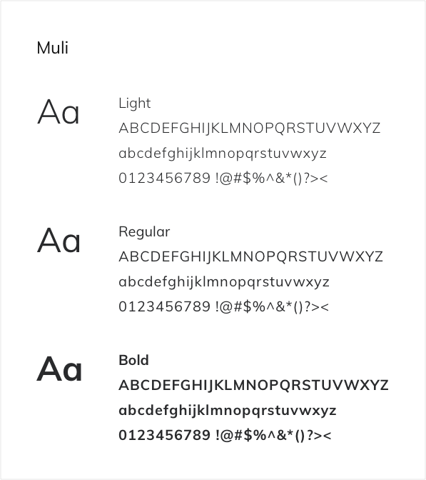

Additional Projects


The origins of this project dates to a coding challenge that helped me gain a better appreciation of responsive design. The concept revolves around a fun idea, an adventure tour group based within the Star Wars Galaxy.
view live websiteAdventurous, Energetic, Dangerous, and Brave
Muli is a minimalist Sans Serif. Muli is designed mainly for use as a display font but is useable as a text font too. Muli has been designed to be used freely across the internet by web browsers on desktop computers, laptops and mobile devices.
For Empire Tours, I wanted the visual identity closely tied to the tone I was imagining as a business that was adventurous, dangerous and energetic. I choose vibrant colors that would pull on the energetic idea and set the imagery to furnish a sense of adventure.
Minimal and simple typography was selected to keep the word copy more readable. I imagined a user easily sifting through the site concentrating on the content of the text more than the styling. With visuals decided, I conceived high fidelity mockups of the desktop and mobile views within sketch.
view desktop designWeb designs today need to be fluid and responsive to exist beautifully on many varying screen sizes or platforms. They should have the ability to respond to the user’s needs while keeping the same design language in mind.
When coding the front end of Empire Tours, there was a problem on how best to display a hover action of an element when no hover states may be available, e.g. a mobile device.
The problem came with a travel destination card element. The card within a desktop experience would “flip” over when a user moves the cursor on it, revealing the details of the travel location. This “flip” interaction was not possible for a mobile experience so a design solution had to be found to keep the desired content available to the user.
The mobile design solution came with the notion to showcase the details from the back of the card below the front details as illustrated in the image below. It was simple and kept with the same design patterns as the desktop experience. Code was then written to detect which is the correct card element to display to the user with their experience.
view responsive solutionThe Empire Tours project was an invaluable learning experience for myself, a project that provided many firsts. I came away with a deeper understanding of front end development coding along with greater care for thinking responsive when it comes to design.
I believe that as a designer it is essential to have an understanding of how your concepts may be developed and for that, I am always curious. Within Empire Tours, I was able to enhance my front end coding skills by learning Sass and how to utilize NPM to build my design projects in a more efficient manner.
On the design side, I gained a greater appreciation of responsive and adaptive design. While a solution may appear best on one platform it is critical to understand that it may not be the most suitable choice for all platforms. Keeping this in mind during the initial creation phase may help conserve time during the front end development process.